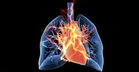

Наркотики — это химические вещества, способные воздействовать на центральную нервную систему человека и формировать стойкую физическую и психическую зависимость. Употребляют их в разных видах: таблетки, инъекции, курение, вдыхание.
Патологическую фанатичную зависимость организма от наркотических веществ называют наркоманией. В зависимости от принадлежности к какой-то группе выделяют алкоголизм, токсикоманию (когда наркотические вещества являются летучими или газообразными веществами, проникая в организм путем вдыхания) и другие.
Наркомания не является болезнью в классическом понимании этого слова. Это целый комплекс патологических изменений в организме, которые подменяют осознание реальности, разрушают личность человека, обязательно меняют круг общения. Если наркоману не оказать помощи, его пристрастие приведет к смерти.
Все наркотики – это яды, которые медленно или быстро (в зависимости от их количества) убивают организм, принося разрушения, видимые и не видимые со стороны. Опасность наркотиков в том, что они оказывают разрушающее на организм действие спустя какое-то время, когда зависимость сформировалась и самостоятельно завязать с наркотиками уже невозможно. Абсолютно точно можно сказать, что психоактивные вещества влияют на все без исключения системы организма.
• Влияние на сердечную систему. Употребление наркотиков неизбежно приводит к «изнашиванию» сердечной мышцы. И если наркоман не скончается от передозировки или инфекции, то спустя три-четыре года это наверняка произойдет от сердечной недостаточности. Прием опиатов приводит к угнетению сердечно-сосудистого центра, находящегося в продолговатом мозге. Cосуды расширяются, артериальное давление резко падает, урежается сердцебиение из-за чего внутренние органы не получают кислород в полном объеме, развивается гипоксия - кислородное голодание. В условиях нехватки кислорода нарушается метаболизм сердечной мышцы, развивается ишемия. За короткий промежуток времени сердце молодого наркомана становится похожим на сердце пожилого, больного человека.

• Влияние на дыхательную систему. Опиатные наркотики угнетают дыхательный и кашлевой центры. Это провоцирует нарушение кашлевого рефлекса, из-за чего различные микроорганизмы задерживаются в дыхательных путях, что в дальнейшем приведет к развитию пневмонии. Передозировка опиатными наркотиками и вовсе приводит к параличу дыхательного центра, из-за чего наркоман умирает от остановки дыхания. При Употреблении марихуаны и курительных смесей в несколько раз чаще, чем у людей курящих табак, развивается хронический бронхит.
• Влияние на пищеварительную систему. Под влиянием наркотических веществ происходит ухудшение выработки пищеварительных ферментов, из-за чего ухудшается переваривание пищи. По сути, несмотря на употребление пищи, у наркомана наблюдается хроническое голодание. Такие люди теряют вес, выглядят истощенными и больными. Их без конца мучают запоры. Задерживающиеся каловые массы выделяют токсины, которые всасываются в кровь и разносятся по телу, кожа приобретает серый, нездоровый цвет. Достаточно быстро развивается цирроз печени, так как этот орган должен освободить организм от яда, но справится с таким количеством токсинов не в силах.
• Влияние на костную систему. Синтетические наркотики, например, дезоморфин вызывают гнойную деструкцию костной ткани. На фоне ухудшения кровоснабжения костной ткани, а также снижения иммунного статуса развивается остеомиелит. Кости разрушаются необратимо и лицо остается деформированным и изуродованным на всю жизнь. На фоне употребления наркотиков кости становятся хрупкими, а зубы выпадают.
• Влияние на нервную систему. На фоне употребления наркотиков, а также при абстиненции наркоманов настигают эпилептические припадки, когда они падают и получают множество травм. Употребление психоактивных веществ приводит к тремору, нарушению походки и координации. Употребление наркотиков часто сопровождается галлюцинациями, которые могут носить устрашающий характер. В таком состоянии человек способен нанести вред не только себе, но и окружающим. Нередко у таких людей развиваются психозы, серьезные психические заболевания.
• Влияние на репродуктивную систему. У наркоманов нарушается потенция. Многие люди уже в молодом возрасте становятся импотентами. Женщины, употребляющие наркотические вещества, рожают детей с серьезными дефектами развития и обрекают их на пожизненные муки.
• Инфекции. Традиционные инфекции инъекционных наркоманов — это ВИЧ и парентеральные гепатиты. По статистике в 40 случаях из 100 наркоман становится ВИЧ-инфецированным. ВИЧ-инфекция приводит к развитию иммунодефицита. При таком состоянии любой микроорганизм способен вызвать тяжелейшую инфекцию. В частности, одна из наиболее распространенных причин смертности наркоманов — это пневмония. Также при внутривенном введении наркотиков человек может занести в организм стрепто— и стафилококки, что приводит к тяжелейшему сепсису